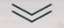
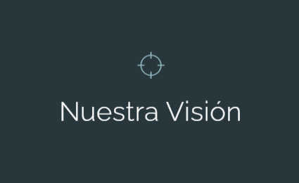
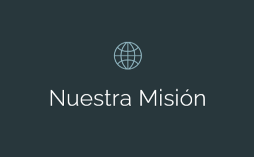

Noticias
FAMILIA DE VITICULTORES



Nosotros
Somos una empresa familiar fundada en 1963 por el Ing. Alberto Zuccardi. Hoy, desde nuestros viñedos y olivares ubicados en distintas zonas de Mendoza, somos reconocidos a nivel local e internacional por la elaboración de grandes vinos y aceites de oliva, que llegan a más de 60 países de los cinco continentes.
Además de relacionarnos con nuestros consumidores a través de nuestros vinos y aceites de oliva, también contamos con un área de Hospitalidad compuesta por dos centros de visitas y tres restaurants ubicados en Bodega Santa Julia, Bodega Zuccardi Valle de Uco y en la almazara Zuelo.
Desde nuestros inicios hemos estado focalizados sobre cuatro objetivos:
- Elaborar vinos y aceites de oliva de la más alta calidad.
- Mantener una constante capacidad de innovación.
- Trabajar en total armonía con el medio ambiente.
- Ser útiles a la comunidad dentro de la cual nos desarrollamos.




Vendimia 2022 en Familia Zuccardi
"En lo que pueda aportar, colaborar y ayudar, ahí voy a estar"
Taller de Costura
Contacto
Ruta Provincial 33
Km 7,5 (M5531)
Maipú, Mendoza
Tel: (+54) 261 4410000